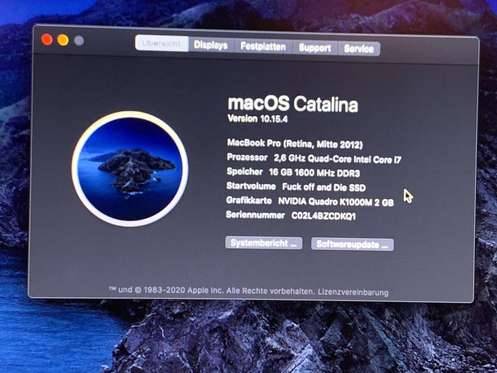

Hier erzähle ich mal eine kleine Geschichte darüber, wie wir (Ich, @SkyrilHD, @HansHubertHass) überhaupt dazu gekommen sind, den Elitebook von @HansHubertHass zu hackintoshen, wie sich die Dinge entwickelt haben und wie es aktuell mit der EFI-Konfiguration steht.
Irgendwann Anfang letzten Jahres: Ich war in meiner Telegram-Gruppe mit meinen Mitgliedern quatschen.
Zum Zeitpunkt hatte @HansHubertHass noch ein 15 Zoll MacBook Pro aus Baujahr 2009 ohne (!) Display.
Wir alle hatten mal darüber gequatscht, wie ein aktuelleres MacBook doch recht nett wäre.
Da kam ich auf die grandiose Idee, dass wir einfach sein Elitebook hackintoshen,
welches von den Specs ja etwa dem eines Non-Retina MacBook Pro 2012 entspricht.
Es hat damit angefangen, dass wir vorgefertigte EFI-Konfigs in einem chinesischen Blog fanden und wir sie einsetzen wollten.
Jedoch war es aufgrund der beschissenen Hosting-Seite nicht möglich, irgendeine Konfig zu ziehen, egal wie sehr wir uns da versucht haben.
Irgendwann wurde es so frustrierend, dass @SkyrilHD und ich auf die Idee kamen, dass wir uns eine Konfig einfach selber bauen, was wir am Ende auch getan haben.
Zuerst haben wir Clover ausprobiert, was aber nicht funktionierte. Danach haben wir OpenCore eingesetzt, was auf einem Schlag bootete.
Am 31.05.2020 war es dann auch soweit:

Wir konnten macOS Catalina endlich booten!
Die EFI war jedoch in 'nem wirklich frühen Entwicklungsstadium:
- WLAN, Sleep, TrackPoint, Bluetooth, Akkuanzeige und Power-Management funktionierten nicht
- Sound war schrecklich wegen VoodooHDA
- AppleALC verhinderte OS-Boot
- TrackPad wurde nur als Maus erkannt
- Helligkeitskontrolle funktionierte aufgrund der GPU nicht
- Display als Monitor erkannt
An der Helligkeitskontrolle haben wir uns ewig versucht, bis wir am Ende doch aufgegeben haben,
da die GPU dafür sorgt, dass das Display nicht als internes eingestuft wird.
Akkuanzeige erweist sich Stand Heute immernoch als Problem, da die HP Embedded Controller Patches unter
OpenCore wohl nicht funktionieren wollen. Denn als wir testweise eine Clover-Config aus einem TonymacX86-Forum genommen haben,
war die Akkuanzeige tatsächlich zu sehen.
Stand Heute haben wir gelöst:
- Sleep an sich funktioniert, jedoch nicht beim Zuklappen (wegen dem erwähnten Display-Problem)
- AppleALC kann wieder verwendet werden, Sound ist somit viel besser
- Für WLAN/Bluetooth wurde zwar die Intel-Karte durch eine Broadcom ersetzt, mittlerweile jedoch auch über itlwm realisierbar.
Irgendwann Ende Dezember wurde das Projekt auf Eis gelegt,
da macOS für @HansHubertHass unwichtiger wurde und es durch Windows ersetzte, wenige Monate,
nachdem er sein MacBook repariert hat und es gegen ein 17 Zöller aus dem selben Baujahr eintauschte.
Irgendwann später schlug ich spaßeshalber vor, die Arbeit an der Hackintosh-EFI wieder fortzusetzen,
aber dafür mit macOS auf einer externen Festplatte, um die Windows-Installation auf der SSD unberührt zu lassen,
wo er sich tatsächlich daraufhin bereiterklärte. Am 26.01.2021 bestellte er sich ein externes Festplattengehäuse,
was uns ermöglichte, das Projekt seit dem 01.02. offiziell wieder fortzusetzen! :D
Wir wagten mit OpenCore 0.6.6 einen kompletten Neuversuch machten seitdem mehrere Fortschritte:
- TouchPad hat jetzt auch Magic TrackPad 2 Emulation dank VoodooRMI
- deutlich sauberes EFI-Konstrukt ohne experimentellen Kram
Jedoch machte uns ein Problem immer ein Strich durch die Rechnung: Der Akku.
Genauer gesagt weigerte sich das Gerät, den Akkuanzeige auszulesen. Seit Mai 2020 hatten wir darauf gewartet, dass wir es hinbekommen würden.
Erst ging es damit los, dass wir es hingekriegt haben, mit einer Clover-EFI aus einem Tonymacx86-Forum den Akkustatus anzuzeigen.
Dann haben wir uns dementsprechend so die Unterschiede angesehen, konnten am Anfang jedoch nichts finden. Das war auch der Zeitpunkt, wo das Projekt dann auch 'ne Zeit lang abgebrochen wurde.
Alles änderte sich, als @Bautheile als zweiter dedizierter Tester dazugestoßen kam. Durch die große Zeitspanne zwischen den BIOS-Versionen waren bei den beiden DSDTs einige Unterschiede zu erkennen, die später auch noch etwas beigetragen hatten.
Irgendwann schafften wir es doch mit der DSDT von der Clover-EFI, dass der Akku ENDLICH unter beiden BIOS-Versionen (F.31 und F.61) unter OpenCore erkannt wurde.
Jedoch ist eine DSDT nicht zu empfehlen, da hierdurch die gesamte ACPI-Tabelle des Laptops geändert wird, was nicht nur zu ewig langen Bootzeiten, sondern auch zu Instabilität führen kann.
Hotpatching via SSDT ist in dem Fall die deutlich bessere Variante. Was wir am Ende auch nach vielen Versuchen und den Ausgleichungen zwischen BIOS-Versionen geschafft haben.
Das größte Problem beim Notebook hat uns letzten Endes doch nicht aufgehalten. :)
Es steht noch mehr an:
- Update auf OC 0.6.7
- SD-Kartenleser funktionstüchtig machten
- Update auf Big Sur
Das war die Geschichte hinter dem 8570W-Hackintosh-Projekt. Folgt der Repository von @SkyrilHD für weitere Updates zu der EFI-Konfiguration.